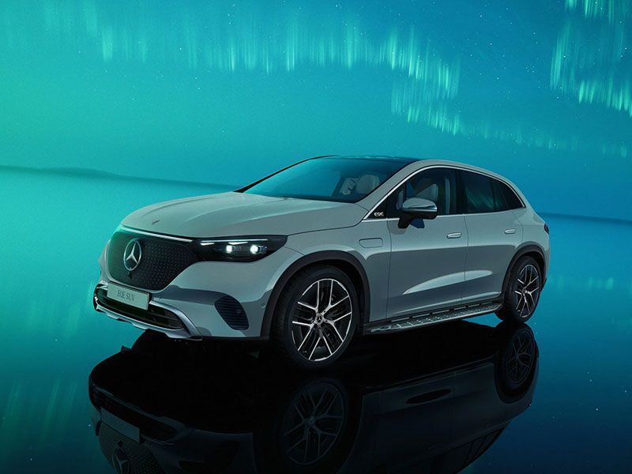

Mercedes-Benz ist eine eingetragene Handelsmarke für Automobile Mercedes-Benz-Group. Der Name entstand 1926 nach dem Zusammenschluss der Daimler-Motoren-Gesellschaft (Marke Mercedes) mit Benz&Cie. zur Daimler-Benz AG AG. 2022 wurden 2,04 Millionen PKW-Neufahrzeuge der Marke verkauft.
Mercedes-Benz ist eine eingetragene Handelsmarke für Automobile der Mercedes-Benz.Der Name entstand 1926 nach dem Zusammenschluss der Daimaler-Motoren-Gesellschaft (Marke Mercedes) mit Benz & Cie. zur Daimler-Benz AG.
2022 wurden 2,04 Millionen PKW-Neufahrzeuge der Marke verkauft Die Marke Mercedes-Benz ist von dem Geschäft Mercedes-Benz Cars (MBC) zu unterscheiden, der neben der Pkw-Marke Mercedes-Benz auch die Marke Smart führt. Er wurde am 1. November 2019 gemeinsam mit dem Geschäftsbereich Mercedes-Benz Vans in die neu gegründete Mercedes-Benz AG, eine einhundertprozentige Tochtergesellschaft der Mercedes-Benz Group, ausgegliedert. Die Nutzfahrzeuge der Marke Mercedes-Benz gehören neben dem Geschäftsbereich Mercedes-Benz Vans auch zum Geschäftsbereich Daimler Trucks & Buses, der ebenfalls am 1. November 2019 in die Daimler Daimler Trucks & Buses AG ausgegliedert wurde.
Ganz frisch vorgestellt wurde am 16. Oktober derEQE SUV . Er ist luxuriös, komfortabel und hat viel Reichweite bekommen. Als AMG-Version kommt er außerdem mit 687 PS und 1.000 Nm Drehmoment.
Mercedes hat am 5. Juli CLE Coupé und und die Cabrio-Version voregestellt. Gewohnt sportlich-elegant kommt das neue Modell daher.
Ab November beginnt der Marktstart für das Coupé, das Cabrio wird ab Frühjahr 2024 in den Verkauf gehen.